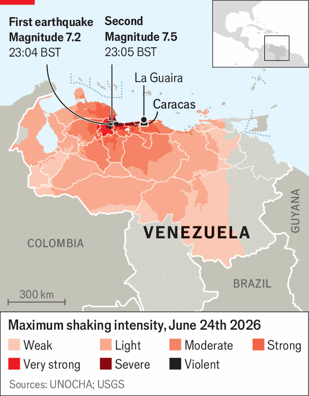

Venezuelans are furious with the American-backed regime
But the earthquakes could give it an excuse to keep putting off elections
July 2nd 2026

Wooden coffins are being piled up behind the port of La Guaira, a short drive from Caracas, Venezuela’s capital. The municipality, once known for its beaches and proximity to the international airport, was among the worst hit by two powerful earthquakes on June 24th. Across the country more than 59,000 buildings have been badly damaged or have completely collapsed, according to one tally.
A week on, specialist rescue teams from at least 27 countries were still racing to save those trapped in the ruins. There have been extraordinary stories: a mother and an 18-day-old baby were rescued after nearly two days; a 21-year-old man was saved after 106 hours. But by July 1st the number of people known to have been killed had reached 2,295, with another 11,267 injured. Reports of over 50,000 missing appear to be exaggerated, mostly based on a crowd-sourced website where people could add loved ones’ names (some names appear several times). But the death toll is bound to rise. The UN in Venezuela says it is procuring 10,000 body bags.

In Caracas dozens of buildings were destroyed. All schools are shut until July 5th. Most businesses have closed, in mourning. People are lining up to donate food, medical supplies and clothing.
The tragedy, and the limits of the response to it, are causing deep anger, mostly aimed at the regime. “Negligence has a terrible cost,” said María Cristina, a university student, as she queued to donate canned food in the capital. La Guaira residents say they were totally on their own for the first 48 hours after the quakes. They tried to save people with their bare hands. “It was all volunteers, the government was no help at all,” says one woman. There is widespread criticism of the armed forces. Some military folk have been seen milling around ruined sites while civilians search for survivors. Four policemen were caught apparently stealing bags of dollar bills from a ruined building when they were meant to be searching for a 14-year-old.
Systemic corruption under the purportedly socialist governments of former president Nicolás Maduro and his predecessor Hugo Chávez have left the services needed to confront a disaster like this hopelessly run down. In Caracas brave members of a government rescue team were borrowing phones from onlookers to use as torches. Messrs Maduro and Chávez used to have a stock answer to critics: that hardships were all the fault of America. But in the “new” Venezuela, that excuse will not fly.
The current interim president, Delcy Rodríguez, is in power thanks to the Trump administration. Following the capture of Mr Maduro, her boss, by US commandos on January 3rd, the former vice-president has been working closely with the Americans. America has eased sanctions. Ms Rodríguez has reformed rules that discouraged foreigners from investing in oil and mining. Mr Trump portrays all this as a great strategic success. He has called it “sort of like a joint venture”. Apart from the earthquake “the people are happy, they’re dancing in the streets,” he said, preposterously, on June 26th.
The earthquakes have imperilled Mr Trump’s narratives. His administration must now decide how far it is prepared to get involved in a large-scale reconstruction effort. The quakes have caused damage and losses between $7.5bn and $9bn, equivalent to nearly 8.5% of GDP, said Asdrúbal Oliveros, a Venezuelan economist.
James Story, a former US ambassador to Venezuela, says America has a duty to help on a large scale, given its overt interference to date. “Clearly Delcy was not an elected president,” he says: “The actions of the United States put her in power.” He recommends “a full effort” of American assistance to alleviate suffering. The Trump administration has deployed significant resources to the crisis. The warship USS Fort Lauderdale has docked at La Guaira. Some 900 armed forces personnel are said to have joined the rescue effort. US soldiers have repaired a runway at Caracas’s international airport, which was damaged in the earthquakes.
America’s grand plan for Venezuela is supposed to involve three stages: stabilisation, recovery and transition. The idea is that stabilisation and recovery (both of Venezuela’s economy and its battered institutions) can take place while Ms Rodríguez is interim president. The third stage, transition, requires democratic elections. No timetable has been given for this process, and the earthquakes may provide a reason to slow it down. That would doubtless suit the regime, which is widely loathed. “There is every reason to believe that this terrible tragedy will be instrumentalised to keep them from moving to elections any time soon,” says Mr Story.
As for the Trump administration, it has hardly shown much urgency in returning Venezuela to democracy. María Corina Machado—a Nobel peace-prize laureate and by far Venezuela’s most popular opposition leader—has said she wants to return to her homeland from her base in the United States. Following the earthquakes, she tried to do so by both private and commercial flights. A jet with her on board, en route to Curaçao, returned to the United States after American authorities asked her to turn back. On June 28th the Venezuelan regime is also believed to have told an airline in Panama, through which Ms Machado was travelling, that she should not be allowed to board. She still says her plan is to be in Venezuela “soon”.
That the Trump administration is still wary of Ms Rodríguez’s main opponent will bring the interim president some comfort. But leading an unpopular regime following the mass trauma of a natural disaster will be difficult. As Ms Rodríguez’s convoy swept through Caracas on June 29th, a homeless man started shouting “ladrona” (thief) at the blacked-out cars. No one tried to stop him. ■
Sign up to El Boletín, our subscriber-only newsletter on Latin America, to understand the forces shaping a fascinating and complex region.